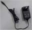
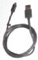
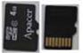
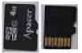

Accessory
Figure
1. Global AC adapter with interchangeable region-specific plugs

2. One rechargeable battery
3. USB cable

4. MicroSD memory card (For service personnel only*)

5. MicroSD memory card (contains Application Software and Firmware)

6. Soft case
7. User Manual CD/DVD
8. Hardcopy Quick Card

9. Gel (60g bottle)**

* The microSD card provided in the device captures error logs and is strictly for Service personnel only. The user must remove this microSD card and insert a blank one when performing data backup. The microSD card that captures error log files is used for troubleshooting by the Repair Depot.
** Not available in all countries